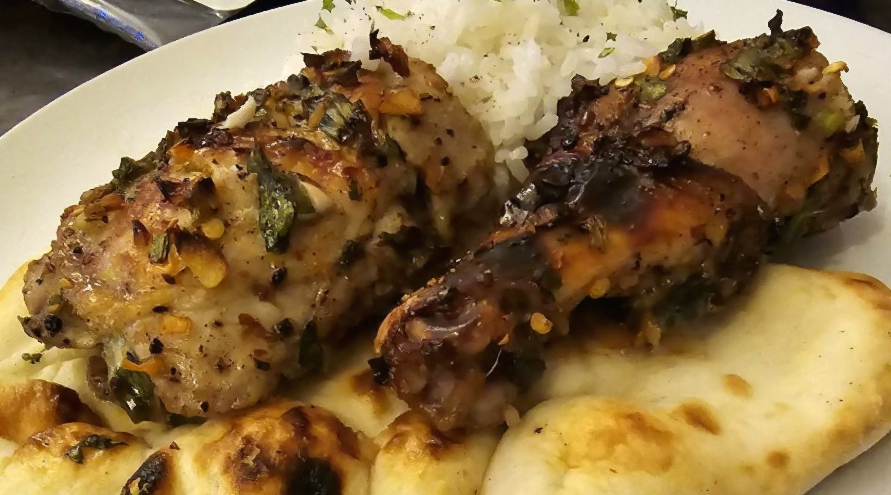

Levi Roots-style Jerk Chicken

Home
Based on the Levi Roots-style Jerk Chicken recipe by Levi Roots from jamieoliver.com
Description
A sweet and spicy Jamaican style Jerk Chicken by Levi Roots.
Ingredients
- 1 tbsp Allspice Berries
- 1 tbsp Black Peppercorns
- 1 tbsp Dried Chili Flakes
- 1/2 tbsp Muscovdao Sugar - May be substituted with fine Dark Brown Sugar if needed.
- 2 tbsp Honey
- 2-3 sprigs of Flat-leaf Italian Parsley
- 2-3 sprigs of Cilantro
- 2 Scotch Bonnet Chilis - May be substituted with 1-2 Habanero Peppers
- 1 clove of Garlic
- 1 thumb-sized pieces of fresh Ginger, peeled.
- 2 Spring Onions - Thinly sliced.
- Olive Oil
- 4 Chicken thighs, skin on.
- 4 Chicken legs, skin on.
- Beer, for drizzling (optional).
- 1 Lime
Preparation
- Pound the Allspice Berries, Peppercorns, and Chili Flakes in a pestle and mortar until fine. Mix in the Sugar and Honey.
- Finely chop the Parsley, Cilantro, Chili Peppers, Garlic, and Ginger. Add to the spash mixture and continue bashing and mixing.
- Add the sliced Spring Onions and 1-2 tbsp of Olive Oil to the spice mixture and mix well.
- Pour the marinade over the Chicken and massage. I advise to wear rubber latex type gloves for this step - especially if you wear contact lenses!
- Refrigerate and allow to marinate for 2 hours minimum, preferably overnight.
- After marinating, cook the Chicken skin-side down in a 400°F oven for approximately 45 minutes, or until the internal temperature reaches 165°F minimum at the thickest portions of meat. You may increase cooking time until the internal temperature is closer to 175°F for more tender meat. Dark-meat Chicken will retain its moisture at higher cook temperatures.
- (Optional) Drizzle over a little bit of Beer towards the end of the cooking time to add some extra stickiness.
- When ready to serve, squeeze over a little Lime juice and enjoy!